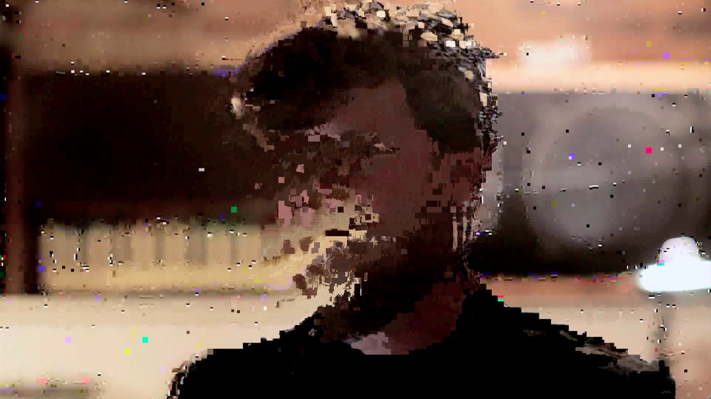
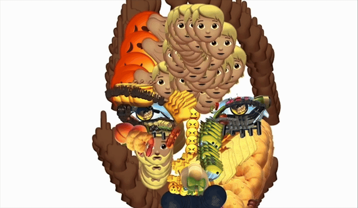
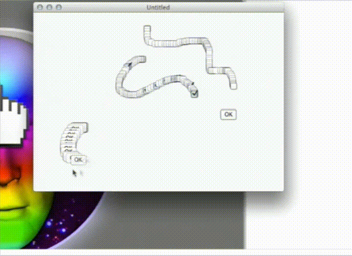

introduction


Hi! We're Nick Briz and jon.satrom, we're part of netizen.org, a collective of new media artists, educators, and activists on a mission to reestablish human agency in the information age through public lectures, digital tools, online events and workshops like this one!We're going to be creating work for the World Wide Web! While most folks engage with the Web through corporate platforms, it's important to remember that the Web is a digital public commons: no one owns the Web and anyone can contribute to it, all you need is a browser (there are many), a server (there are many of these as well) and a computer connected to the Internet!

We'll be creating our own web apps outside the walled gardens of big tech using netnet.studio ◕ ◞ ◕ an open-source browser-based hypermedia maker-space for fully realizing the Web’s creative potential! netnet is both a place for learning and making, in this workshop we'll be using it mostly to make, but we encourage you to explore its many interactive lessons afterwards starting with the Orientation tutorial!
net.art + artware
We're going to be creating our own experimental web based drawing apps. We'll be drawing inspiration from work at the intersection of two new media art sub-genres: internet art and software art. The former refers to art that embraces the Internet as a creative medium. Like the Web itself, it began in the mid 1990s, the first wave of internet artists is often referred to as the net.art movement.
Dig Deeper! To learn more, check out the interactive tutorials on this topic on netnet.studio: net.art (part 1) when artists discovered HTML as well as net.art (part 2) from ASCII Art to Form Art.
Software art (aka artware) is an umbrella term for all manner of experimental software projects by artists, hackers and other creative technologists that explore software (apps, programs, exectubales, etc) as a creative medium. Where mainstream software is typically aimed at providing some utility for the user, artware departs from this convention to explore a number of other themes and concerns.
Dig Deeper! You can read more about artware and explore loads of examples in our Software Art: Notes and Examples page.
Not all artware is web-based and not all net.art is software, but the intersection of the two is an exciting one, let's look at a couple examples:

emoji.ink by tig.ht (aka Yung Jake and Vince Mckelvie) is as much a "software art" piece as it is a tool for creating experimental drawings entirely out of emojis. You can read more about it in the New York Times article Digital Artist Yung Jake Scores With Emoji Portraits as well as from watching this video.
Even more meta, the project InterFace Painter by Pox (aka jon.satrom and Ben Syverson) is an app for creating apps by drawing their interfaces, what the duo playfully refers to as "expressive UI". It's part of a suite of experimental software art projects aimed at challenging the tech industry's core vaues. You watch them demo InterFace Painter and other pieces in their satirical start-up presentation at the Notacon hacker conference.

These are both examples of a popular artware sub-genre: the experimental drawing app. There are of course numerous different apps out there for creating digital drawings on a computer, like Adobe Illustrator, Canva, Procreate, etc. These would be considered traditional utilitarian software, the goal is to provide the user the best digital drawing experience, often modeled on traditional drawing tools, this is especially the case for apps like Procreate which aim to mimic physical brushes and strokes (an approach to design known as skeuomorphism). This is a very different goal from what drives artists making software art or artware, who are motivated instead by other experimental aims and conceptual questions. While many of the examples below are practically usable they're less concerned with creating somethign that is "user friendly" or "works well" and more interested in pushing the boundaries of what we imagine a drawing tool is for and how it should work.
let's code!
As artists, when exploring new domains, we often start by copying other artists. We'll begin by recreating simple versions of emoji.ink and InterFace Painter. Then we'll mash these up and remix them into something new.
- SKETCH/DEMOS GO HERE
Please share what you make with us, email us at hi@netizen.org, send us your netnet sharable sketch URL or your published URL, if you published your project to the Web.